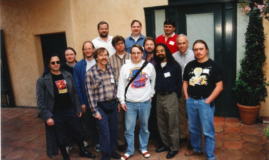

认识开源软件¶
开源的概念¶
「开源」一词对应英文 Open Source，最初起源于软件开发领域，因此也称为「开放源代码」，对应的软件则称为开源软件（Open Source Software，简称 OSS）。除了我们熟知的开源软件以外，开源的表现形式还有很多，例如开源硬件（Open Source Hardware）、开放设计（Open Design）、开放文档（Open Document）等等。开源的目的是分享共享、加速创新，可以说开源已经成为一种超越软件生产界限的运动和工作方式。
开源软件¶
我们先来看看开源软件的概念，很多人可能会认为只要把源代码公开了就是开源软件。实际上这种理解是不充分的，按照 OSI 组织（Open Source Initiative Association）给出的 OSD 定义，除了公开源代码，开源软件的发行条款还必须符合以下十个条件。
| 序号 | 条款 | 简单说明 |
|---|---|---|
| 1 | Free Redistribution | 允许自由地再发布软件 |
| 2 | Source Code | 程序必须包含所有源代码 |
| 3 | Derived Works | 可以修改和派生新的软件 |
| 4 | Integrity of The Author's Source Code | 发布时保持软件源代码的完整性 |
| 5 | No Discrimination Against Persons or Groups | 不得歧视任何个人或团体 |
| 6 | No Discrimination Against Fields of Endeavor | 不得歧视任何应用领域（例如商业） |
| 7 | Distribution of License | 许可证的发布具有延续性 |
| 8 | License Must Not Be Specific to a Product | 许可证不能针对于某一个产品 |
| 9 | License Must Not Restrict Other Software | 许可证不能限制其他软件 |
| 10 | License Must Be Technology-Neutral | 许可证必须是技术中立的 |
你可以通过查阅 OSI 官方许可证的目录 Open Source Initiative 认可的开源许可证 ，了解常见的开源许可证。
通过了解这些条件约束，我们可以得出开源软件的定义：开源软件是一种技术和立场中立的使用许可证约束的开放源代码的软件。
开源软件需要保持开放的心态，对任何技术和立场都保持客观公正的态度，而且在开放源代码时，还需要遵循开源许可协议，允许任何人使用、拷贝、修改以及重新发布。开源许可协议主要分为宽松许可协议（Apache、BSD、MIT 等）和严格许可协议（GPL、GPL v3、LGPL、Mozilla 等）两大类。除此之外，一个优秀的可持续发展的开源软件，还需要公开发布项目技术文档和其他材料、二进制文件（可选）等，以及拥有一个开放性的社区，接收用户和开发者的反馈，共同探讨开源软件的发展。
开源硬件¶
通过前面的介绍，我们知道了什么是开源软件，那么什么是开源硬件呢？
类比开源软件，你可能会误以为开源硬件是可以免费获得、自由修改并再分发的硬件。如果你这么想，你就大错特错了，毕竟硬件是有形的，是看得见摸得着的。我们先来简单看一下 开源硬件协会（Open Source Hardware Association）对开源硬件的描述：
开源硬件是可以通过公开渠道获得的硬件设计，任何人可以对已有的设计进行学习，修改，发布，制作和销售。硬件设计的源代码的特定的格式可以为其他人获得，以方便对其进行修改。理想情况下，开源硬件使用随处可得的电子元件和材料，标准的过程，开放的基础架构，无限制的内容和开源的设计工具，以最大化个人利用硬件的便利性。开源硬件提供人们在控制他们的技术自由的同时共享知识并鼓励硬件设计开放交流贸易。
这里要划重点了，OSHWA 在描述开源硬件时使用的是硬件设计而不是硬件本身。开源硬件的定义是在开源软件的基础上进行的，这里不再赘述，感兴趣的读者可以在 OSHWA 官网找到开源硬件的完整 定义。
目前比较有名的开源硬件有 Arduino、树莓派（Raspberry Pi）、BeagleBoard 等等。
开源设计¶
开源设计是开源项目的另一表现形式，开源设计的定义是遵循开源许可的可以通过公开渠道获得的设计类项目，主要指的是非源代码类型的项目，比如：icon、UI、画稿、图纸等。这些项目也需要遵守开源协议，并且享受协议规章的保护。
下面提供一个 icon 的设计，供大家参考。
开源和开放设计 - Make Icons Witch Sketch
开源文档¶
开源文档在开源项目中非常常见，开源文档的定义是遵循开源许可的可以通过公开渠道获得的文档类项目，开源文档存在于各种项目中，种类覆盖广泛，像博客、百科、菜谱、冷知识、项目说明文档等都可以作为开源文档进行分享。开源文档常见的开源协议也有很多，比如我们《开源指北》使用的 CC BY-SA 4.0 协议。
开源的历史¶
UNIX¶
提及开源的历史，不得不从 Unix 说起。
在 1965 年前后，贝尔实验室（Bell）、麻省理工学院（MIT）及通用电气公司（GE）曾共同发起了 Multics 项目，旨在开发一个全面的、通用的分时操作系统，实现让大型主机可以同时提供 300 台以上的终端机连接使用的目标。然而，到了 1969 年，由于项目进度落后、资金短缺，在认为 Multics 项目不可能成功之后，贝尔实验室退出了该项目的研究工作。虽然 Multics 项目没有取得成功，但是培养出了很多优秀的人才，其中就包括肯·汤普森（Ken Thompson）和丹尼斯·里奇（Dennis Ritchie）。
图 1.1 Ken Thompson（坐着）和 Dennis Ritchie 在 PDP-11 前工作
回到贝尔实验室后，以肯·汤普森为首的研究人员吸取了 Multics 项目失败的经验教训，将 Multics 庞大而复杂的系统进行简化，实现了一种分时操作系统的雏形，并将其取名为 UNIX。此后十年，UNIX 在学术机构和大型企业中得到了广泛的应用，当时的 UNIX 拥有者 AT&T 公司以低廉甚至免费的许可将 UNIX 源码授权给学术机构做研究或教学之用，许多机构在此源码基础上加以扩充和改进。
由于早期 AT&T 为避免美国司法部起诉它违反《反垄断法》而签订了和解协议，同意不进入计算机行业，不销售任何与计算机有关的产品。因此从 UNIX 诞生起的前十五年， 学术机构和黑客们自由地共享源码，以分散的方式共同合作开发 UNIX 系统。为后来的自由和开源软件的意识形态和社区诞生过程中起到了奠基性的作用。
转折发生在 1984 年，由于对 AT&T 的限制法令被解除，AT&T 开始以能获利的价格销售 UNIX。UNIX 的源码依然可用，但 AT&T 将 UNIX 从研究性质的项目转变为一个商业项目，这在 UNIX 黑客社区里产生了危机，他们开始寻找一个可替代的类 UNIX 系统。
GNU¶
实际上，在 UNIX 变成一个商业项目之前，由于硬件价格的不断下跌，制造商已经开始期望软件能够带来额外的收入。于是，开始出现种种保护软件、对其收费的措施，越来越多的厂商开始单独销售软件，也不再提供软件的源代码，软件工业开始独立出来了。1976 年，比尔·盖茨就曾发表《致计算机爱好者的公开信》，明确提出了软件版权（CopyRight）的理念。
图 1.2 Richard Stallman
1983 年，由于私有软件的增长和对不再能自由使用计算机程序的担忧，MIT 的理查德·斯托曼（Richard Stallman）开始倡导自由软件运动，并发起了 GNU 计划。GNU 是「GNU is NOT UNIX」的无穷递归缩写，其目标是构建一整套完全由自由软件构成的 UNIX OS 体系。GNU 起初进展很顺利，开发出 GLibc、GCC、GDB 等一系列操作系统必备软件。
随着推动自由软件发展和成熟的愿景日益强烈，理查德·斯托曼意识到仅通过编写和分享 GNU 代码是远远不够的。于是，在 1985 年创建了自由软件基金会（Free Software Foundation，简称 FSF），其主要工作是运行 GNU 计划，开发更多的自由软件。同时，FSF 还创建了保护 GNU 和其他自由软件项目的法律和制度框架，提出了与 CopyRight 理念针锋相对的 CopyLeft（许可复制权）理念，其表现形式为 GPL，即公共许可证（General Pubic License）。
Linux¶
1991 年，林纳斯·托瓦兹（Linus Torvalds）公开发布了一个类 UNIX 操作系统内核 —— Linux，并接受 CopyLeft 理念。从 Linux 0.12 版本起，Linux 内核开始采用 GPL 许可证的新版权声明。虽然 Linux 内核并不是 GNU 计划的一部分，但由于 HURD 内核进展缓慢，使得 Linux 得到广泛关注并得以快速发展。GNU 与 Linux 的发展，可以说是相辅相成，因此 我们通常把使用 Linux 内核并且大量使用 GNU 组件的操作系统发行版称为 GNU/Linux。
图 1.3 Linus Torvalds
正是 Linux 的出现，使得自由软件运动有了自己可以与 Microsoft 的 Windows 相抗衡的操作系统。自由软件运动初战告捷。但是，自由软件运动关于自由的追求，毕竟和现实的商业氛围格格不入，带有着过于理想化的色彩。这种反商业的信条，让一些本来也反对私有软件的人士对自由软件敬而远之。正是在这种背景下，一部分原有自由软件运动人士，开始尝试将理想的自由软件与现实的商业氛围进行某种衔接。
自由软件和开源软件¶
1998 年，埃里克·雷蒙德（Eric Raymond）等人成立了一个名为开源促进会（Open Source Initiative，简称 OSI）的组织。为了减少意识形态上的沟壑，以及「自由（Free）」一词造成免费软件的误解。OSI 组织决定从「自由软件」中去掉了「自由」一词，使用「开源软件」（Open Source Software）作为共通名称，并创建了自己的开放源码的定义，以及自己的一套许可证。
 图 1.4 1998 年 Open Source Summit
正因如此，自由软件运动和开源软件运动有着密不可分的关系，两者的根本差别在于它们看待世界的方法。开源软件运动的理念更倾向于解决实际问题，既抓住了私有软件的痛点，又实现了与商业的融合。
开源、Git和代码托管平台¶
前面提到，开源软件是允许自由复制和重新分发的，那么分散的开发者之间是如何协作的呢？尤其是 Linux 这样依靠全世界热心的志愿者参与的项目。其实早年（1991-2002 年间）世界各地的志愿者是通过 diff 的方式把源代码补丁发给 Linus，然后由 Linus 本人通过手工方式合并代码。直到 2002 年，Linux 项目组才开始启用一个专有的分布式版本控制系统 BitKeeper 来管理和维护代码。
但好景不长，2005 年，开发 BitKeeper 的商业公司结束了与 Linux 内核开源社区的合作。于是 Linux 开源社区（特别是 Linux 的缔造者 Linus Torvalds）决定开发自己的版本控制系统 —— Git 。很快，Linux 内核的源码已经由 Git 全面管理了。Git 是完全分布式的，同时拥有强大的代码管理能力，支持离线操作和非线性分支管理，使用 Git 可以让散布各地的开发者更加高效地协同工作，可以说，Git 的出现极大地推动了开源的发展。
图 1.5 GitHub 创始人 P.J. Hyett、Tom Preston-Werner 和 Chris Wanstrath
2008 年，GitHub 网站上线了，它为开源项目免费提供 Git 存储，无数开源项目开始迁移至 GitHub。GitHub 的出现让开源的工作方式变得更简单和有趣了。如今，每天都有无数来自世界各地的开发者在 GitHub 上进行交流，Github 已经成为一个包含问题追踪和版本控制的特殊社交网络。
初学者容易混淆 Git 和代码托管平台的概念。Git 是版本控制系统，开发者可以通过 Git 在本地工作空间建立项目仓库，每一个 Git 仓库都会包含一个 .git 目录，里面存储了该项目的每一次源代码的提交日志，可以方便地回退到过去的任意一个提交的版本与过去的代码进行比对。毫不夸张地说，Git 仓库就像是一个具有魔法的文件系统，Git 则帮我们记录该仓库下所有的读写信息，并在工作空间、暂存区、本地仓库之间随意切换。
而代码托管平台，比如 GitHub、GitLab、Bitbucket、Gitee 等，则是基于 Git 的代码托管平台，通过网络为用户提供 Git 仓库托管服务。得益于 Git 分布式的特性，Git 代码托管平台上的仓库通常充当远程仓库的角色，便于多个开发者之间的同步。在此基础之上，代码托管平台还提供了许多协作功能，将版本管理、Bug 跟踪、代码审查、邮件列表、IRC 等众多功能组合在一起，以实现更高效的协同开发。简单来说，代码托管平台不仅仅提供代码托管服务，还有项目管理，甚至社交等功能。
自由与开源¶
自由软件¶
70年代，当时 Richard 在 MIT 的AI（人工智能）实验室做程序员。在 70 年代到 80 年代的变革期间，有两件事给了 Richard 较大的刺激，促使他辞去工作，投入到自由软件运动当中。
一件事涉及实验室的打印机。当时的打印机都带有程序的源代码，因此在打印机出现故障时，Richard 可以直接修改源代码以解决各种故障。但后来实验室购入了一台新的施乐打印机，但不再附有源代码。Richard 无法像以前通过修改代码来解决打印机故障，并向实验室的与施乐公司有往来的教授寻求帮助。但该名教授拒绝了 Richard，因为已经与施乐公司签署了保密协议。
另一件事涉及 LISP 编译器。LISP 是一种古老的编程语言，Richard 曾经在一个 LISP 编译器的项目上工作了好久。后来 Symbolics 公司向他索取该编译器的代码，Richard 便提供了公有领域的代码。该公司在拿到代码后对编译器进行了扩充和改进。得知此事后的 Richard 向 Symbolics 公司索取改进后的代码，但是被拒绝，原因是修改后的代码属于专有软件。
开源软件¶
Linux 是非常成功的，但在当时，少有人能够预见到一群志愿者能够共同完成一件极其复杂的作品。美国的 Eric Raymond 于 1997 年针对此现象撰写了文章《大教堂与集市》，他比较了两种软件开发方式，GNU Hurd 类似于大教堂，其特点是封闭式开发、成本高、周期长、品质优异；而 Linux 类似于集市，其特点是开放式开发、成本低、周期短、品质平庸。GNU 项目的软件虽然源代码是公开的，但其开发是由一个专属团队管控的；而 Linux 的源代码在互联网公开后可以被所有人查阅并改进。
1998 年 1 月，在浏览器大战中由于 Windows 的捆绑而败给微软 IE 的网景公司部分是因为受到了《大教堂与集市》一文的启示，决定开放其导航者（Netscape Navigator）浏览器的源代码，作为自由软件由全世界的程序员进行改进（导航者浏览器之后演变为今日的 Mozilla 火狐浏览器）。Eric 反过来又受到网景公司的启示，认为可以将自由软件引入到商业世界中。但自由软件（free software）这一用语在当时并不被商业界接受，因为自由与免费的英文都是同样的 free，自由软件容易令人联想到免费软件。另外，自由软件的哲学，尤其是著佐权（copyleft）性质的许可证也过于激进。
Eric S. Raymond
思前想后，Eric 等人引入了开源软件（open source software）这一用语，并获得成功。1998 年 2 月，旨在推广开源软件的开源促进会（open source initiative，OSI）在美国加州成立。根据开源促进会的标准，开源软件可以使用非著佐权（copyleft）性质的宽松（permissive）许可证，允许该许可证下的代码的衍生代码闭源。
Tip
自由软件到目前为止都是开源形式的，但是开源软件并不一定是自由软件，尽管大部分开源软件是自由的。